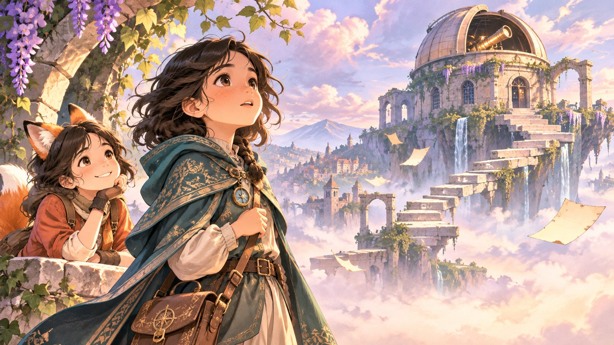

ИНТЕРАКТИВНАЯ ПОВЕСТЬ
Ясмина и тайна исчезнувших чисел
В городе, где числа управляют временем, кто-то стёр правило, связывающее их между собой. Начни расследование.

В городе, где числа управляют временем, кто-то стёр правило, связывающее их между собой. Начни расследование.